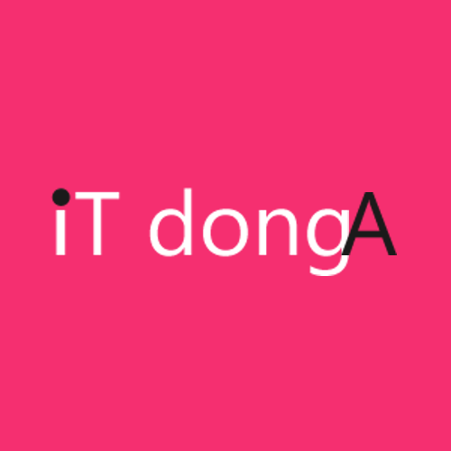

[강원 AI 활용지원] 캣츠 "15평 아파트서 시작한 맞춤형 드론 사업, AI 더해 비즈니스 혁신"

세 줄로 읽기
강원창조경제혁신센터 x IT동아 공동기획] 강원창조경제혁신센터는 소상공인들의 인공지능 전환과 현장 맞춤형 기술 도입을 지원하는 ‘혁신 소상공인 AI 활용 지원사업’을 운영합니다.
이를 토대로 현업의 문제를 AI로 해결하며 성과를 낸 강원도 소상공인들을 만나봅니다.
[IT동아 김영우 기자] 드론은 이제 단순한 취미·촬영 장비를 넘어 국방, 재난 감시, 물류 배송, 공공 안전 등 다양한 산업 현장의 핵심 인프라로 자리 잡고 있다.
원문 문장에서 고른 요약입니다. 숫자와 사실은 원문에서 다시 확인하세요.
핵심 포인트
- 1특수목적 무인항공기 개발·제작 전문 기업 ‘캣츠’를 이끄는 김경진 대표 / 출처=캣츠
- 2요구하는 비행시간과 탑재 중량, 운용 환경이 제각각인 산업용·특수목적 드론 시장은 단순 유통만으로는 대응하기 어렵다.
- 3고도의 설계·제작 기술은 물론 고객 맞춤형 상담부터 견적, 정비, 납품 문서 작성에 이르기까지 복잡한 실무 과정을 체계적으로 소화해야 하기 때문이다.
- 4강원특별자치도 원주시에 본사를 둔 ‘캣츠(KATS, 대표 김경진)’는 2020년 설립된 특수목적용 무인항공기 개발·제작 전문 기업이다.
이 블로거의 최근 글
- 딩티껌번 최우수상 수상자 “간호조무사 자격 취득하고 병원 취업까지 성공” [2026 국민내일배움카드 우수사례 공모전]
- 서울창조경제혁신센터, '소버린 AI 얼라이언스' 발대식 개최... 국산 LLM+NPU와 동반 성장할 스타트업 모집
- 고객 리뷰 5만 건에 주목한 화장품 기업이 AI를 활용하는 법
- 인천대 청년 소셜벤처, 지역의 문제를 사업으로 푼다
- [2026 강소특구] 인천서해검단강소연구개발특구 “환경기술 역량 토대로 기후테크 산업 선도”
같은 분류의 다른 글
- 김장김치 보관방법 시기와 적정 온도에 따른 김치 맛의 차이
- 혈압 높을때 증상 혈압정상수치 고혈압 기준과 대처법
- 삼성 클라우드 백업 복원 동기화 갤럭시 설정 사용법
- 일본 마운자로 가격 대마도 처방 비용 국내 반입 기준
- 인스타 차단 확인 방법 차단 당하면 디엠 프로필 검색 제한과 해제
공개 페이지에는 짧은 소개와 원문 링크만 있습니다. 원문 전문은 올리지 않습니다.